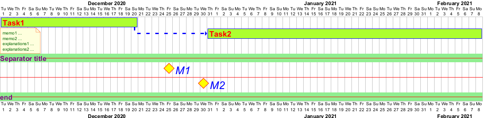

@startgantt
<style>
ganttDiagram {
task {
FontName Helvetica
FontColor red
FontSize 18
FontStyle bold
BackGroundColor GreenYellow
LineColor blue
}
milestone {
FontColor blue
FontSize 25
FontStyle italic
BackGroundColor yellow
LineColor red
}
note {
FontColor DarkGreen
FontSize 10
LineColor OrangeRed
}
arrow {
FontName Helvetica
FontColor red
FontSize 18
FontStyle bold
BackGroundColor GreenYellow
LineColor blue
LineStyle 8.0-13.0
LineThickness 3.0
}
separator {
BackgroundColor lightGreen
LineStyle 8.0-3.0
LineColor red
LineThickness 1.0
FontSize 16
FontStyle bold
FontColor purple
Margin 0
Padding 0
}
}
</style>
Project starts the 2020-12-01
[Task1] lasts 20 days
note bottom
memo1 ...
memo2 ...
explanations1 ...
explanations2 ...
end note
[Task2] lasts 40 days
[Task2] starts 10 days after [Task1]'s end
-- Separator title --
[M1] happens on 5 days after [Task1]'s end
--
[M2] happens on 10 days after [Task1]'s end
-- end --
@endgantt